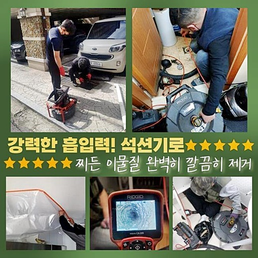
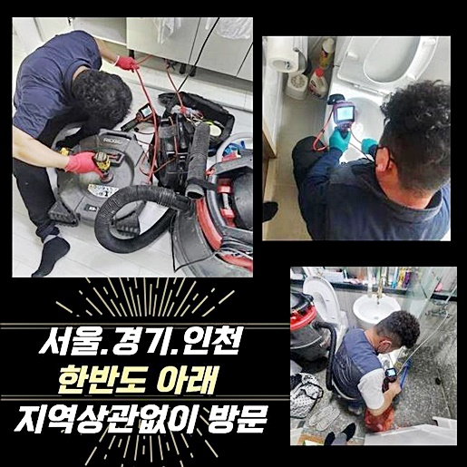
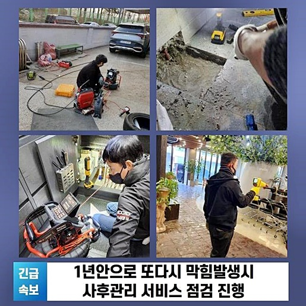
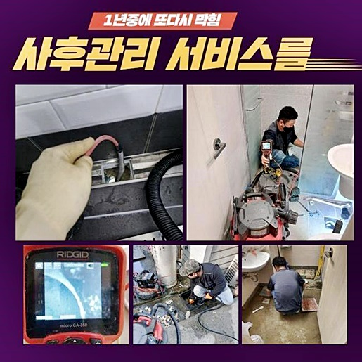
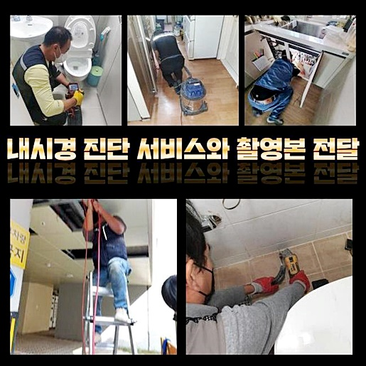
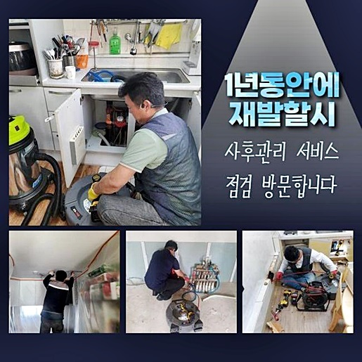
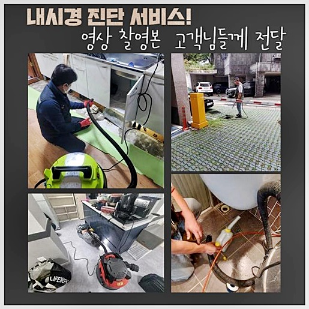

🏠 금천구 가산동싱크대역류 시흥동 배관내시경카메라 출장수리
용인시 처인구 배관막힘 전문 시공 후기

📋 작업 개요
- 위치: 용인시 처인구, 수원시 영통구, 화성시 동탄
- 서비스 유형: 배관막힘, 고압세척, 내시경점검
- 작업 일시:
- 업체명: 하수구수사대 (010-5615-2118)
🔍 문제 상황
금천구 가산동싱크대역류 시흥동 배관내시경카메라 출장수리
정상적으로 구동되는 것이 뜬금없이 고장나면 배신감이나 여러 부작용들이 생성될 수 밖에 없습니다
그중에서도 수도시설을 당장 쓰지 못한다면 삶의 질이 수직하락할 것입니다
얼마전에 접수받은 후에 시공을 도와드리러 내방드린 곳도 생활이 전면 중단된 상황이었죠
고객님께서는 막힘도 그렇지만 악취 현상이 특히 고민이라고 하셨고 폐수되어야 할 수돗물도 잘 흘러나가지 못하는데다가 냄새가 진짜 심각하다고 하소연을 해오셨습니다
보이지 않는 깊은 하수구의 문제는 조속히 수선하지 않는다면 시간 비용이 더 투자되어야하는 일까지 형성하게 됩니다
이번 현장처럼 점진적으로 유속이 느려질 때는 잘못된 활용으로 인한 경우가 대다수인데요
하수가 전혀 내려가지 않고 윗 부분에 남아있다면 우선 개수대의 물과 찌꺼기들을 없애주고 나서야 내부 검토에 돌입할 수 있습니다
고장난 이후 고객님께서 고통받으셨을 것이고 수습이 안되어 답답하셨을테니 이제는 고장 전처럼 원만하게 시설물을 쓰실 수 있게 얼른 되돌려드려야 했습니다
하수시설은 낮과 밤을 가리지 않는데 새벽을 틈 타 발현될 때는 상시 처리해 드려야 하며 장치도 곧장 쓸 수 있어야 해요
싱크대 주변부만 한정되지않고 전반적으로 악취가 어마어마한 수준이라서 얼른 수습을 들어가서 보완해드리고자 했습니다
수돗물을 틀어서 상황을 관찰했더니 오래 틀고 있어도 물이 이동성을 보이지 않았고 역류까지 함께 일어났더라고요
이전에 찾아왔던 업체들도 고난도 상태라고 판단돼서 회피하고 돌아갔어서 마지막 도전으로 저희에게 의뢰를 해주신 부분이었죠

🔎 원인 분석
💡 전문가 진단: 정밀 진단 장비를 사용하여 슬러지의 고착 여부를 판명하고 타격/세척 작업을 실시했습니다.
저희의 오랜 노하우를 기반으로 포인트를 잘 짚었던 덕에 다소 난해했던 상황을 말끔히 치유할 수 있었네요
힘들겠다고 좌절하지 않고 막힘의 동기도 잘 찾아내고 청소도 꼼꼼하게 신경써줬다며 좋은 리액션을 보내주셨어요
무리가 가지않는 금액선에다 하자가 있으면 다시 봐주는 것도 긍정적인 부분이라고 언급을 해주셨습니다
현황을 판별하여 세부적으로 관찰해서 스피드감있고 성과가 좋을 돌파구를 도출해 내게 됐습니다
석션기나 스케일링 장비를 활용해서 이물질을 없애가면 가장 까다롭던 부분인 물 막힘은 호전되곤 하는데요!
이런 흡입기를 돌려서 배관 내면을 정돈하는 것은 번거롭지만 하자를 방지합니다
파편들이 잔여해 있다면 뭉쳐가면서 덩어리가 될 위험성이 있기 때문입니다
다시 막혀버리면 경비의 허비가 잇따르고 의뢰인분의 힘든 심경도 부메랑처럼 돌아오게 되니 단숨에 마무리해야 합니다
하수관로에 기름찌꺼기나 각종 찌꺼기가 뭉쳐버리면 물이 흘러가는 경로 자체가 가로막혀서 제자리걸음하여 더러운 물이 부패되어 냄새가 납니다
이처럼 난감한 사건을 체험하고 싶지 않다면 규칙적으로 하수 시스템을 관심있게 살피며 정비해야 합니다
전용 내시경 카메라를 작동시킨 뒤 문제가 발생한 측면들을 알아낼 수 있어요
슬러지가 누적돼있는 경우는 정확한 사용 기준을 실천하지 않아서 나타나는 현상입니다
큰 탈은 없겠지 싶어서 끈적한 양념이나 음식물을 물에 섞어 내보내면 조금씩 쌓이다 문제가 발현돼요

🔧 작업 과정
결함이 곧장 눈에 보이진 않더라도 침전물은 깊숙히 침투하여 지속적으로 몸을 불려나가고 봉쇄되기까지 합니다
찌꺼기로 속이 채워진 모습을 보완하기를 원한다면 뱅글뱅글 도는 샤프트를 적용하는 게 이롭습니다
이 툴을 활용해서 오랜 세월 쌓여오다가 고형화된 오염물들을 갈아줄 수 있기 때문이죠
샤프트의 끝 부분이 갈고리 형태라서 오염원을 손쉽게 절단하고 걸어 올릴 수 있어요
이와 같은 과정으로 말끔한 환경을 만들고 깨끗한 물이 순탄하게 배출되게 해줘요
감지하기 힘든 파이프라인의 어디가 데미지를 입었는지 고객님께 꾸준히 설명을 드려서 훨씬 마음이 놓인다 하셨어요
주름관을 먼저 떼고 석션을 써서 내부를 정돈했는데 그다지 상황이 나아지진 않았죠
하수관을 완전히 청소하고 보니 그때서야 내부의 물들이 이동하는 것이 보였어요
하수구 구멍 근처의 이물질들을 꺼내고 밀어내더라도 결코 막힘이 끝을 맺진 않으니 전문진의 손길로 세척해야 합니다
뚫음작업은 상상 이상의 잠복된 문제까지 발현되니 예리하게 관찰해야 합니다
든든한 장비력은 물론이고 경험을 살려서 막힘을 초래한 물질들을 조금씩 제거과정을 실시했어요
보통 오염물질을 없애려면 앞서 가동한 석션과 스케일링기 관통기 등 특수 청소 도구로 내부 환경을 개선합니다
오염원이 머무른 지점은 일부분에 불과하지만 기능을 완벽하게 회복하려면 고압수까지 활용하면 좋아요
석션으로 거듭 작업하여 여기저기 산재한 찌꺼기들을 찬찬히 없애주고 고압수를 쏴서 깨끗한 결과를 내드릴 수 있습니다!
카메라를 통해 배관의 내측을 탐색해 봤더니 오물이 가득 밀집된 게 보였기에 방해 인자로 막혀버렸다는 상황이라는 게 보였습니다
청소를 겉에서만 실시해서는 극복되지 않을 사안이라 보여서 결함이 없도록 조성하는 것이 필요하다는 판단을 내렸습니다
촬영 도구로 세부적인 탐사하는 공정과 통로를 만들어주는 단계는 장비들을 잘 다루는 능력과 스킬이 반드시 투입되어야 해요
다발적으로 막힘이 만들어 질 수 있으니 전량을 삭제시키지 못한다면 통수되는 기능이 완전하게 제공될 수가 없습니다!
수돗물을 이용하지 못한다는 점은 건물의 종류가 어떻든간에 고충을 야기할 수 있으니 빨리 고쳐지기를 원할 것입니다
게다가 스믈스믈 올라오는 악취는 내부에서 활동하는 모든 사람들에게 가혹한 경험일테니 하루라도 빨리 고쳐야합니다


✅ 작업 완료
내부 배관에서 흔히 엿보이는 찌꺼기들을 보면 조리하고 남은 껍질 따위나 기름 덩어리가 가장 흔해요
내부에 오래 고여있다보면 분해되는 과정에서 썩어가며 후각을 괴롭히는데다 곰팡이균의 포자도 날리게 합니다
하수구가 고장나면 위생적으로도 나쁘지만 거주자 가구원분들의 생활을 저해할 수 있는 요소이니 단순히 내버려 둬서는 치명상을 입을 수도 있습니다
뜬금 없는 설비의 오류를 직면하게 될 때에는 책임감있는 업체를 찾아서 에러를 몸소 확인한 뒤에 잘못된 곳을 바로잡는 게 해답이라고 알려드리고 싶네요
연식이 오래된 하수구라면 적합한 세기를 잘 알고있는 실력 좋은 곳을 찾아야 하자가 없습니다!
저렴하지만 체계성이 없게 뚫어보려는 곳은 아랫집으로 물이 흐르는 등의 하자가 탄생할 수 있는 문제이니 신중한 고려를 하시면 좋겠네요




⚠️ 하수구 배관 막힘 예방 및 관리 가이드
- ✅ 머리카락, 비닐, 물티슈 등 물에 분해되지 않는 이물질은 절대 흘려보내지 마세요.
- ✅ 기름기 많은 식기는 설거지 전 키친타올로 먼저 기름때를 닦아내세요.
- ✅ 주기적으로 배수구에 뜨거운 물을 가득 부어주어 유지방 고착을 방지하세요.
- ✅ 작업 후 1년 이내 재발 시 무상 A/S 보증 서비스를 제공합니다.
💡 핵심 정리
- 확실한 장비 작업(내시경 점검 및 샤프트 스케일링)으로 원인을 뿌리 뽑습니다.
- 작업 후 1년 이내에 동일한 부위 재발 시 100% 무상 A/S 서비스를 보장합니다.
- 서울 · 경기 · 인천 전 지역에 24시간 언제든 긴급 출동할 수 있도록 항시 대기 중입니다.
❓ 자주 묻는 질문 (FAQ)
🚨 용인시 처인구 배관막힘 문제로 고민이신가요?
정확한 원인 진단과 확실한 시공으로 재발 없는 해결을 약속드립니다.
24시간 긴급 출동 | 서울 · 경기 · 인천 전지역 | 1년 내 재발 시 무상 A/S